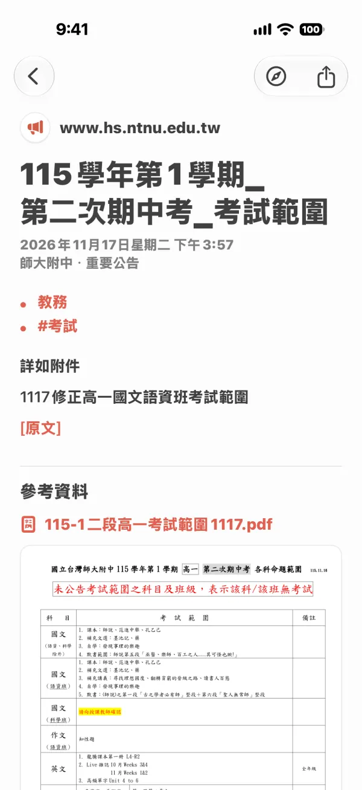

校板 BanGo
校網公告，不用再自己翻。每 10 分鐘檢查五所高中的校網，不用登入，打開就能看
新近推出。0.1.0 測試版的重點。
閱讀。分類、列表、內文都在手邊。
時間軸
新公告排在最上面，下拉就更新。
支援裝置iPhone、Android
公告內頁
附件和圖片直接顯示，也能打開校網原文。
支援裝置iPhone、Android
分類和主題
在側邊欄切換類別、主題和來源。
支援裝置iPhone、Android
外觀
可以切換語言、字體和顏色，也會跟著手機的深色模式。
支援裝置iPhone、Android
學校。目前支援五所。
師大附中
只抓跟學生有關的分類。
支援裝置iPhone、Android
建國中學
只抓跟學生有關的分類。
支援裝置iPhone、Android
北一女中
只抓跟學生有關的分類。
支援裝置iPhone、Android
成功高中
只抓跟學生有關的分類。
支援裝置iPhone、Android
中山女高
只抓跟學生有關的分類。
支援裝置iPhone、Android
外觀。換成你習慣的樣子。
顏色：經典
背景
字體
App 的背景會跟著手機的深色模式，也可以切換中文和 English。

即將推出。還在做，還沒放進測試版。
開發中
手機推播
新公告直接通知到手機，不用打開 App。先從 Android 開始。
規劃中
年級和關鍵字
只收自己年級的公告，也能訂閱停課、段考、獎學金這類關鍵字。
規劃中
主畫面小工具
不用打開 App，在主畫面就能看最新 3 則公告。
安裝。校板測試版。
0.1.0 是目前的測試版，還沒有上架 App Store 和 Google Play。
下載
按下面的按鈕，回答 4 個問題後拿到一次性下載連結。
iPhone
需要 iOS 26 以上。用 SideInstaller 以自己的 Apple ID 簽名安裝，iOS 27 以上直接在手機上就能裝，iOS 26 要先用電腦做一次配對檔。
Android
打開 APK，依畫面提示允許安裝未知來源的 App。需要 64 位元（arm64）手機。
常見問題。先看看這裡。
支援哪些手機？
iPhone 需要 iOS 26 以上，Android 版也可以下載。
有推播通知嗎？
目前還沒有，要打開 App 下拉更新。手機推播正在開發，會先從 Android 開始。
會收集我的資料嗎？
不用登入，也不用填個人資料，校板只讀取校網公開的公告。付款由 Apple 和 Google 處理，我們只知道你有沒有訂閱和到期日。隱私權政策
公告一定正確嗎？
分類靠標題判斷，排程也可能延遲。考試、繳費和報名期限請點進去，以校網原文為準。